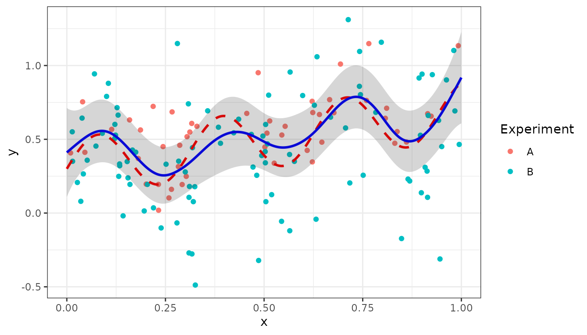
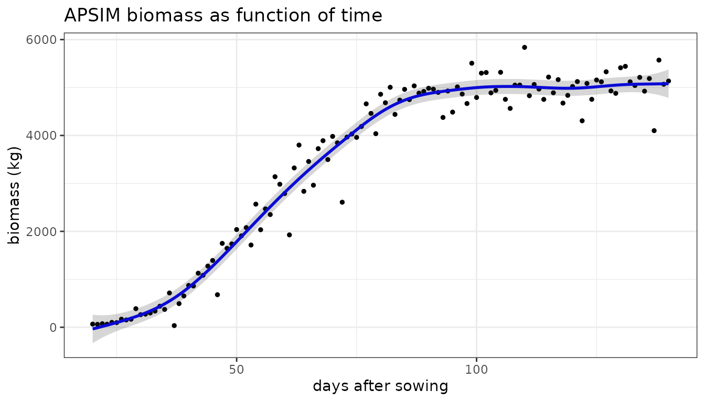

Mixed Models and Smoothing
2025-01-15
Source:vignettes/Solving_Linear_Mixed_Models.Rmd
Solving_Linear_Mixed_Models.RmdThe LMMsolver package
The aim of the LMMsolver package is to provide an
efficient and flexible system to estimate variance components using
restricted maximum likelihood or REML (Patterson and Thompson 1971), for
models where the mixed model equations are sparse. An important feature
of the package is smoothing with P-splines (Eilers and Marx 1996). The sparse
mixed model P-splines formulation (Boer 2023) is used, which makes the
computations fast. The computational advantage of the sparse mixed model
formulation is especially clear for smoothing in higher dimensions (Boer 2023; Carollo et al. 2024).
A Linear Mixed Model (LMM) has the form
where is a vector of observations, is a vector with the fixed effects, is a vector with the random effects, and a vector of random residuals. and are design matrices.
If the matrices
,
,
and
are sparse, the mixed model equations can be solved using efficient
sparse matrix algebra implemented in the spam package (Furrer and Sain
2010). To calculate the derivatives of the log-likelihood in
an efficient way, the automatic differentiation of the Cholesky matrix
(Smith 1995; Boer 2023) was implemented in C++ using
the Rcpp package (Eddelbuettel and Balamuta
2018).
Introduction
The purpose of this section is to give users an easy introduction,
starting from simple linear regression. Based on simulations we will
explain the main functions, the input and the output. First we load the
LMMsolver and ggplot2 packages:
Linear Regression
We will start with a simple example where the true function is linear in variable :
f1 <- function(x) { 0.6 + 0.7*x}Using this function we simulate data and add normal distributed noise:
set.seed(2016)
n <- 25
x <- seq(0, 1, length = n)
sigma2e <- 0.04
y <- f1(x) + rnorm(n, sd = sqrt(sigma2e))
dat1 <- data.frame(x = x, y = y)We can fit the data using the LMMsolve function:
obj1 <- LMMsolve(fixed = y ~ x, data = dat1)We can make predictions using the predict()
function:
newdat <- data.frame(x = seq(0, 1, length = 300))
pred1 <- predict(obj1, newdata = newdat, se.fit = TRUE)
# adding the true values for comparison
pred1$y_true <- f1(pred1$x)Note that for this linear model we could have used the standard
lm() function, which will give the same result.
The following plot gives the simulated data with the predictions, and pointwise standard-error bands. The true value is plotted as dashed red line.
ggplot(data = dat1, aes(x = x, y = y)) +
geom_point(col = "black", size = 1.5) +
geom_line(data = pred1, aes(y=y_true), color = "red",
linewidth = 1, linetype = "dashed") +
geom_line(data = pred1, aes(y = ypred), color = "blue", linewidth = 1) +
geom_ribbon(data = pred1, aes(x=x,ymin = ypred-2*se, ymax = ypred+2*se),
alpha = 0.2, inherit.aes = FALSE) +
theme_bw()Fitting a non-linear function
In this section we will use the following non-linear function for the simulations:
f2 <- function(x) { 0.3 + 0.4*x + 0.2*sin(20*x) }The simulated data is generated by the following code
set.seed(12)
n <- 150
x <- seq(0, 1, length = n)
sigma2e <- 0.04
y <- f2(x) + rnorm(n, sd = sqrt(sigma2e))
dat2 <- data.frame(x, y)We can use the spline argument to fit the non-linear
trend:
where spl1D(x, nseg = 50) defines a mixed model
P-splines with 50 segments.
The model fit can be summarized in terms of effective dimensions:
summary(obj2)
#> Table with effective dimensions and penalties:
#>
#> Term Effective Model Nominal Ratio Penalty
#> (Intercept) 1.00 1 1 1.00 0.0
#> lin(x) 1.00 1 1 1.00 0.0
#> s(x) 11.28 53 51 0.22 0.0
#> residual 136.72 150 148 0.92 30.3
#>
#> Total Effective Dimension: 150The intercept and the slope lin(x) define the linear (or
fixed) part of the model, the non-linear (or random) part is defined by
s(x), with effective dimension 11.28.
Making predictions on the interval and plotting can be done in the same way as for the linear regression example:
newdat <- data.frame(x = seq(0, 1, length = 300))
pred2 <- predict(obj2, newdata = newdat, se.fit = TRUE)
pred2$y_true <- f2(pred2$x)
ggplot(data = dat2, aes(x = x, y = y)) +
geom_point(col = "black", size = 1.5) +
geom_line(data = pred2, aes(y = y_true), color = "red",
linewidth = 1, linetype ="dashed") +
geom_line(data = pred2, aes(y = ypred), color = "blue", linewidth = 1) +
geom_ribbon(data= pred2, aes(x=x, ymin = ypred-2*se, ymax = ypred+2*se),
alpha=0.2, inherit.aes = FALSE) +
theme_bw() Smoothing combining two experiments
In this section we will give a bit more complicated example, to show
some further options of LMMsolver. Suppose there are two
experiments, A and B, with the same true unobserved non-linear function
f2(x) as defined before.
The simulated data is given by the following code:
set.seed(1234)
nA <- 50
nB <- 100
mu_A <- 0.10
mu_B <- -0.10
sigma2e_A <- 0.04
sigma2e_B <- 0.10
x1 <- runif(n = nA)
x2 <- runif(n = nB)
y1 <- f2(x1) + rnorm(nA, sd = sqrt(sigma2e_A)) + mu_A
y2 <- f2(x2) + rnorm(nB, sd = sqrt(sigma2e_B)) + mu_B
Experiment <- as.factor(c(rep("A", nA), rep("B", nB)))
dat4 <- data.frame(x = c(x1, x2), y = c(y1,y2), Experiment = Experiment)Before analyzing the data in further detail a boxplot gives some insight:
ggplot(dat4, aes(x = Experiment, y = y, fill = Experiment)) +
geom_boxplot() +
geom_point(position = position_jitterdodge(), alpha = 0.3) Comparing the two experiments we can see that:
- There is a clear difference in mean/median between the two
experiments. This can be corrected for by adding the argument
random = ~Experiment. - The variance in experiment A is smaller than in B. This implies that
is important to allow for heterogeneous variances which can be modelled
by defining
residual = ~Experiment.
The model in LMMsolve() is given by:
obj4 <- LMMsolve(fixed= y ~ 1,
spline = ~spl1D(x, nseg = 50, xlim = c(0,1)),
random = ~Experiment,
residual = ~Experiment,
data = dat4)The table of effective dimensions is given by:
summary(obj4)
#> Table with effective dimensions and penalties:
#>
#> Term Effective Model Nominal Ratio Penalty
#> (Intercept) 1.00 1 1 1.00 0.00
#> lin(x) 1.00 1 1 1.00 0.00
#> Experiment 0.93 2 1 0.93 77.97
#> s(x) 7.89 53 51 0.15 0.00
#> Experiment_A!R 43.66 50 50 0.87 32.15
#> Experiment_B!R 95.52 100 100 0.96 9.01
#>
#> Total Effective Dimension: 150And making the predictions:
newdat <- data.frame(x=seq(0, 1, length = 300))
pred4 <- predict(obj4, newdata = newdat, se.fit = TRUE)
pred4$y_true <- f2(pred4$x)
ggplot(data = dat4, aes(x = x, y = y, colour = Experiment)) +
geom_point(size = 1.5) +
geom_line(data = pred4, aes(y = y_true), color="red",
linewidth = 1, linetype = "dashed") +
geom_line(data = pred4, aes(y = ypred), color = "blue", linewidth = 1) +
geom_ribbon(data = pred4, aes(x = x,ymin = ypred-2*se, ymax = ypred+2*se),
alpha = 0.2, inherit.aes = FALSE) +
theme_bw()
The estimated random effects for Experiment can be obtained using the
coef() function:
coef(obj4)$Experiment
#> Experiment_A Experiment_B
#> 0.07719844 -0.07719844The sum of the effects is equal to zero, as expected for a standard random term.
Smooth trends in two dimensions
For two-dimensional mixed P-splines as defined in Boer (2023) we will use two examples. The first example is US precipitation data. The second example models a data set for Sea Surface Temperature (SST) described in Cressie, Sainsbury-Dale, and Zammit-Mangion (2022).
US precipitation example
As a first example we use the USprecip data set in the
spam package (Furrer
and Sain 2010), analysed in Rodríguez-Álvarez et al. (2015).
## Get precipitation data from spam
data(USprecip, package = "spam")
## Only use observed data
USprecip <- as.data.frame(USprecip)
USprecip <- USprecip[USprecip$infill == 1, ]The two-dimensional P-spline can be defined with the
spl2D() function, and with longitude and latitude as
covariates. The number of segments chosen here is equal to the number of
segments used in Rodríguez-Álvarez et al. (2015).
obj5 <- LMMsolve(fixed = anomaly ~ 1,
spline = ~spl2D(x1 = lon, x2 = lat, nseg = c(41, 41)),
data = USprecip)The summary function gives a table with the effective dimensions and the penalty parameters:
summary(obj5)
#> Table with effective dimensions and penalties:
#>
#> Term Effective Model Nominal Ratio Penalty
#> (Intercept) 1.00 1 1 1.00 0.00
#> lin(lon, lat) 3.00 3 3 1.00 0.00
#> s(lon) 302.60 1936 1932 0.16 0.26
#> s(lat) 409.09 1936 1932 0.21 0.08
#> residual 5190.31 5906 5902 0.88 13.53
#>
#> Total Effective Dimension: 5906A plot for the smooth trend can be obtained in a similar way as for
the one-dimensional examples, using the predict() function.
First we make predictions on a regular two-dimensional grid:
lon_range <- range(USprecip$lon)
lat_range <- range(USprecip$lat)
newdat <- expand.grid(lon = seq(lon_range[1], lon_range[2], length = 200),
lat = seq(lat_range[1], lat_range[2], length = 300))
plotDat5 <- predict(obj5, newdata = newdat)For plotting the predictions for USA main land we use the
maps and sf packages:
plotDat5 <- sf::st_as_sf(plotDat5, coords = c("lon", "lat"))
usa <- sf::st_as_sf(maps::map("usa", regions = "main", plot = FALSE))
sf::st_crs(usa) <- sf::st_crs(plotDat5)
intersection <- sf::st_intersects(plotDat5, usa)
plotDat5 <- plotDat5[!is.na(as.numeric(intersection)), ]
ggplot(usa) +
geom_sf(color = NA) +
geom_tile(data = plotDat5,
mapping = aes(geometry = geometry, fill = ypred),
linewidth = 0,
stat = "sf_coordinates") +
scale_fill_gradientn(colors = topo.colors(100))+
labs(title = "Precipitation (anomaly)",
x = "Longitude", y = "Latitude") +
coord_sf() +
theme(panel.grid = element_blank())
Sea Surface Temperatures
The second example using two-dimensional P-splines is for Sea Surface Temperatures (SST) data (Cressie, Sainsbury-Dale, and Zammit-Mangion 2022). In their study they compare a wide range of software packages to analyse the SST data. For the comparison they focus on a region of the ocean known as the Brazil-Malvinas confluence zone, an energetic region of the ocean just off the coast of Argentina and Uruguay, where the warm Brazil current and the cold Malvinas current meet (Cressie, Sainsbury-Dale, and Zammit-Mangion 2022).
They divided the data within this region into a training and a testing data set, each consisting of approximately 8,000 observations.
data(SeaSurfaceTemp)
head(SeaSurfaceTemp, 5)
#> lon lat sst type
#> 1 -51.5607 -38.2629 289.94 train
#> 2 -55.0255 -49.3163 278.60 train
#> 3 -48.4228 -35.7470 291.51 train
#> 4 -48.7221 -44.2118 282.78 train
#> 5 -54.5217 -47.3870 282.44 train
table(SeaSurfaceTemp$type)
#>
#> test train
#> 7894 7713First we convert SST from Kelvin to Celsius and split the data in the training and test set:
# convert from Kelvin to Celsius
df <- SeaSurfaceTemp
df$sst <- df$sst - 273.15
### split in training and test set
df_train <- df[df$type == "train", ]
df_test <- df[df$type == "test", ]The next plot shows the raw data, using the same color palette as in Cressie, Sainsbury-Dale, and Zammit-Mangion (2022).
nasa_palette <- c(
"#03006d","#02008f","#0000b6","#0001ef","#0000f6","#0428f6","#0b53f7",
"#0f81f3","#18b1f5","#1ff0f7","#27fada","#3efaa3","#5dfc7b","#85fd4e",
"#aefc2a","#e9fc0d","#f6da0c","#f5a009","#f6780a","#f34a09","#f2210a",
"#f50008","#d90009","#a80109","#730005"
)
map_layer <- geom_map(
data = map_data("world"), map = map_data("world"),
aes(group = group, map_id = region),
fill = "black", colour = "white", linewidth = 0.1
)
# Brazil-Malvinas confluence zone
BM_box <- cbind(lon = c(-60, -48), lat = c(-50, -35))
ggplot() +
scale_colour_gradientn(colours = nasa_palette, name = expression(degree*C)) +
xlab("Longitude (deg)") + ylab("Latitude (deg)") +
map_layer + xlim(BM_box[, "lon"]) + ylim(BM_box[, "lat"]) + theme_bw() +
coord_fixed(expand = FALSE) +
geom_point(data = df_train, aes(lon, lat, colour = sst), size=0.5)For this complicated data we need more segments for
spl2D() as in the previous example, because of the strong
local changes in Sea Surface Temperatures in this region.
obj6 <- LMMsolve(fixed = sst ~ 1,
spline = ~spl2D(lon, lat, nseg = c(70, 70),
x1lim = BM_box[, "lon"], x2lim = BM_box[, "lat"]),
data = df_train, tolerance = 1.0e-1)
summary(obj6)
#> Table with effective dimensions and penalties:
#>
#> Term Effective Model Nominal Ratio Penalty
#> (Intercept) 1.00 1 1 1.00 0.00
#> lin(lon, lat) 3.00 3 3 1.00 0.00
#> s(lon) 755.49 5329 5325 0.14 0.00
#> s(lat) 689.68 5329 5325 0.13 0.00
#> residual 6263.84 7713 7709 0.81 6.65
#>
#> Total Effective Dimension: 7713The predictions on a grid are shown in the next figure
lon_range <- BM_box[, "lon"]
lat_range <- BM_box[, "lat"]
newdat <- expand.grid(lon = seq(lon_range[1], lon_range[2], length = 200),
lat = seq(lat_range[1], lat_range[2], length = 200))
pred_grid <- predict(obj6, newdata = newdat, se.fit=TRUE)
pred_grid <- pred_grid[pred_grid$se<5, ]
## Plot predictions on a grid
ggplot(pred_grid) +
geom_tile(aes(x = lon, y = lat, fill = ypred)) +
scale_fill_gradientn(colours = nasa_palette) +
labs(
fill = "pred.",
x = "Longitude (deg)", y = "Latitude (deg)"
) +
map_layer +
theme_bw() +
coord_fixed(expand = FALSE, xlim = BM_box[, "lon"], ylim = BM_box[, "lat"]) +
scale_x_continuous(breaks = c(-58, -54, -50))The standard errors for the predictions are in the column
se in the data frame pred_grid and can be
plotted using the following code:
## Plot standard error
ggplot(pred_grid) +
geom_raster(aes(x = lon, y = lat, fill = se)) +
scale_fill_distiller(palette = "BrBG", direction = -1) +
labs( fill = "s.e.", x = "Longitude (deg)", y = "Latitude (deg)") +
map_layer +
theme_bw() +
coord_fixed(expand = FALSE, xlim = c(-60, -48), ylim = c(-50, -35)) +
scale_x_continuous(breaks = c(-58, -54, -50))Predictions for the test set are given by
pred_test <- predict(obj6, newdata = df_test)
ggplot(pred_test, aes(x = sst,y = ypred)) + geom_point() +
xlab("observed SST (Celsius)") + ylab("predicted SST (Celsius)") +
geom_abline(intercept=0,slope=1,col='red') + theme_bw()Calculation of the root mean squared prediction error (RMSPE) for the test set:
The RMSPE is in the same range (0.44-0.46) as for the software
packages used in Cressie, Sainsbury-Dale, and
Zammit-Mangion (2022). On a
standard desktop the calculations using LMMsolver take less
than 10 seconds, taking advantage of the sparse structure of the
P-splines mixed model (Boer 2023).
Generalized Linear Mixed Models.
The LMMsolver package can also be used for non-gaussian
data, using the family argument, with default
family = gaussian().
In this section we will give three examples. The first example is
simulated count data following a Poisson distribution. The second
example is for data following a binomial distribution. The final example
is categorical data using family = multinomial(), which is
a generalization of the binomial distribution.
Modelling count data using Poisson model.
As an example we use count data using the Poisson distribution, defined by with parameter and is the number of occurrences. More general, the value of the parameter can depend on another variable , for example time. Here we will assume that is defined on the interval and defined by:
Using this function we simulate the following data
set.seed(1234)
n <- 150
x <- seq(0, 1, length=n)
fun_lambda <- function(x) { 4 + 3*x + 4*sin(7*x) }
x <- seq(0, 1, length = n)
y <- rpois(n = n, lambda = fun_lambda(x))
dat3 <- data.frame(x = x, y = y)Now we fit the data with the argument
family = poisson():
obj3 <- LMMsolve(fixed = y ~ 1,
spline = ~spl1D(x, nseg = 50),
family = poisson(),
data = dat3)
summary(obj3)
#> Table with effective dimensions and penalties:
#>
#> Term Effective Model Nominal Ratio Penalty
#> (Intercept) 1.00 1 1 1.00 0
#> lin(x) 1.00 1 1 1.00 0
#> s(x) 6.54 53 51 0.13 0
#> residual 141.46 150 148 0.96 1
#>
#> Total Effective Dimension: 150Making predictions and plotting the data is similar to the Gaussian data we showed before:
newdat <- data.frame(x = seq(0, 1, length = 300))
pred3 <- predict(obj3, newdata = newdat, se.fit = TRUE)
pred3$y_true <- fun_lambda(pred3$x)
ggplot(data = dat3, aes(x = x, y = y)) +
geom_point(col = "black", size = 1.5) +
geom_line(data = pred3, aes(y = y_true), color = "red",
linewidth = 1, linetype ="dashed") +
geom_line(data = pred3, aes(y = ypred), color = "blue", linewidth = 1) +
geom_ribbon(data= pred3, aes(x=x, ymin = ypred-2*se, ymax = ypred+2*se),
alpha=0.2, inherit.aes = FALSE) +
theme_bw() 
Binomial distribution
The binomial distribution is given by: where is number of observations, the probability on succes per observation, and is the number of successes (and failures).
Similar as in previous section we will assume that the probability is a non-linear function of () The following code simulates the data:
set.seed(1234)
n <- 100
sz <- 10
fun_prob <- function(x) { 0.5 + 0.4*sin(2*pi*x) }
x <- seq(0, 1, length=n)
nsucces <- sapply(x, FUN=function(x) {
rbinom(n=1, size = sz, prob = fun_prob(x))
})
dat <- data.frame(x = x, succes = nsucces,
failure= sz - nsucces)
head(dat, 5)
#> x succes failure
#> 1 0.00000000 3 7
#> 2 0.01010101 5 5
#> 3 0.02020202 5 5
#> 4 0.03030303 5 5
#> 5 0.04040404 4 6Next we can analyse the data using family = binomial(),
and for the response using cbind(succes, failure):
obj3 <- LMMsolve(fixed = cbind(succes, failure) ~ 1,
spline = ~spl1D(x, nseg = 50),
family = binomial(),
data = dat)
summary(obj3)
#> Table with effective dimensions and penalties:
#>
#> Term Effective Model Nominal Ratio Penalty
#> (Intercept) 1.00 1 1 1.00 0
#> lin(x) 1.00 1 1 1.00 0
#> s(x) 5.85 53 51 0.11 0
#> residual 92.15 100 98 0.94 1
#>
#> Total Effective Dimension: 100Making predictions can be done as shown before in the other examples:
newdat <- data.frame(x = seq(0, 1, by=0.01))
pred3 <- predict(obj3, newdata = newdat, se.fit=TRUE)Finally, the next R-chunk generates the figure, where the black points are the fraction of successes, the red dashed curve is the true probability, and the blue curve are the predictions:
pred3$y_true <- fun_prob(pred3$x)
dat$y <- dat$succes/sz
ggplot(data = dat, aes(x = x, y = y)) +
geom_point(col = "black", size = 1.5) +
geom_line(data = pred3, aes(y = y_true), color = "red",
linewidth = 1, linetype = "dashed") +
geom_line(data = pred3, aes(y = ypred), color = "blue", linewidth = 1) +
geom_ribbon(data= pred3, aes(x=x, ymin = ypred-2*se, ymax = ypred+2*se),
alpha=0.2, inherit.aes = FALSE) +
theme_bw()Multinomial distribution
The multinomial distribution is a generalization of the binomial distribution. The fitting of multinomial responses is more complicated than the standard GLMMs, for details see Fahrmeir et al. (2013).
For categories we have: with and .
In the following we will give an example with four categories (A, B, C, D), where probabilities depend on a single variable :
k <- 4
mu <- c(0.1, 0.4, 0.6, 0.9)
names(mu) <- LETTERS[1:k]
nonlinear <- function(x, mu) {
z <- sapply(mu, function(mu) { exp(-8*sin(pi*(x-mu))^2)})
# normalize to sum equal to one
z <- z/sum(z)
return(z)
}Next we simulate the data:
x <- runif(n, 0, 1)
sz <- 10
multiNom <- t(sapply(x, FUN=
function(x) {
rmultinom(n=1, size=sz, prob = nonlinear(x,mu))
} ))
colnames(multiNom) <- names(mu)
dat <- data.frame(x, multiNom)
head(dat, 4)
#> x A B C D
#> 1 0.03545673 7 0 0 3
#> 2 0.56507611 0 1 9 0
#> 3 0.28025778 2 8 0 0
#> 4 0.20419632 10 0 0 0
obj <- LMMsolve(fixed = cbind(A,B,C,D) ~ 1,
spline = ~spl1D(x, nseg = 17, xlim = c(0,1)),
data = dat,
family = multinomial())
summary(obj)
#> Table with effective dimensions and penalties:
#>
#> Term Effective Model Nominal Ratio Penalty
#> (Intercept) 3.00 3 3 1.00 0
#> lin(x) 3.00 3 3 1.00 0
#> s(x) 6.03 60 54 0.11 0
#> residual 287.97 300 294 0.98 1
#>
#> Total Effective Dimension: 300The predictions are given by:
sRows <- rowSums(multiNom)
fr <- multiNom/sRows
dat_fr <- data.frame(x, fr)
x0 <- seq(0, 1, by = 0.01)
newdat <- data.frame(x = x0)
pred <- predict(obj, newdata = newdat)
head(pred)
#> x category ypred
#> 1 0.00 A 0.9051117
#> 2 0.01 A 0.9117668
#> 3 0.02 A 0.9178041
#> 4 0.03 A 0.9231971
#> 5 0.04 A 0.9279194
#> 6 0.05 A 0.9319405The following code generates the plot with prediction, with the points the observed fractions, the dashed curves the true probabilities and the solid curves the predicted values:
library(tidyr)
colnames(pred) <- c("x", "category", "y")
prob_true <- t(sapply(X=x0, FUN = function(x) { nonlinear(x, mu)}))
colnames(prob_true) <- names(mu)
df_true <- data.frame(x = x0, prob_true)
prob_true_lf <- df_true %>% gather(key = "category",value="y", A:D)
dat_fr_lf <- dat_fr %>% gather(key = "category",value="y", A:D)
p1 <- ggplot(prob_true_lf, aes(x = x, y=y, color = category)) +
geom_line(linetype='dashed') +
geom_line(data=pred) +
geom_point(data=dat_fr_lf)
p1Examples from Quantitative Genetics
In this section we will show some examples from quantitative genetics, to illustrate some further options of the package.
Oats field trial
As a first example we will use an oats field trial from the
agridat package. There were 24 varieties in 3 replicates,
each consisting of 6 incomplete blocks of 4 plots. The plots were laid
out in a single row.
## Load data.
data(john.alpha, package = "agridat")
head(john.alpha)
#> plot rep block gen yield row col
#> 1 1 R1 B1 G11 4.1172 1 1
#> 2 2 R1 B1 G04 4.4461 2 1
#> 3 3 R1 B1 G05 5.8757 3 1
#> 4 4 R1 B1 G22 4.5784 4 1
#> 5 5 R1 B2 G21 4.6540 5 1
#> 6 6 R1 B2 G10 4.1736 6 1We will use the Linear Variance (LV) model, which is closely connected to the P-splines model (Boer, Piepho, and Williams 2020). First we need to define the precision matrix for the LV model, see Appendix in Boer, Piepho, and Williams (2020) for details:
## Add plot as factor.
john.alpha$plotF <- as.factor(john.alpha$plot)
## Define the precision matrix, see eqn (A2) in Boer et al (2020).
N <- nrow(john.alpha)
cN <- c(1 / sqrt(N - 1), rep(0, N - 2), 1 / sqrt(N - 1))
D <- diff(diag(N), diff = 1)
Delta <- 0.5 * crossprod(D)
LVinv <- 0.5 * (2 * Delta + cN %*% t(cN))
## Add LVinv to list, with name corresponding to random term.
lGinv <- list(plotF = LVinv)Given the precision matrix for the LV model we can define the model
in LMMsolve using the random and ginverse
arguments:
obj7 <- LMMsolve(fixed = yield ~ rep + gen,
random = ~plotF,
ginverse = lGinv,
data = john.alpha)The absolute deviance () and variances for the LV-model are
round(deviance(obj7, relative = FALSE), 2)
#> [1] 54.49
summary(obj7, which = "variances")
#> Table with variances:
#>
#> VarComp Variance
#> plotF 0.01
#> residual 0.06as reported in Boer, Piepho, and Williams (2020), Table 1.
Model biomass as function of time.
In this section we show an example of mixed model P-splines to fit biomass as function of time. As an example we use wheat data simulated with the crop growth model APSIM. This data set is included in the package. For details on this simulated data see Bustos-Korts et al. (2019).
data(APSIMdat)
head(APSIMdat)
#> env geno das biomass
#> 1 Emerald_1993 g001 20 65.57075
#> 2 Emerald_1993 g001 21 60.70499
#> 3 Emerald_1993 g001 22 74.06247
#> 4 Emerald_1993 g001 23 63.73951
#> 5 Emerald_1993 g001 24 101.88005
#> 6 Emerald_1993 g001 25 96.84971The first column is the environment, Emerald in 1993, the second column the simulated genotype (g001), the third column is days after sowing (das), and the last column is the simulated biomass with medium measurement error.
The model can be fitted with
The effective dimensions are:
summary(obj8)
#> Table with effective dimensions and penalties:
#>
#> Term Effective Model Nominal Ratio Penalty
#> (Intercept) 1.00 1 1 1.00 0.00
#> lin(das) 1.00 1 1 1.00 0.00
#> s(das) 6.46 53 51 0.13 0.01
#> residual 112.54 121 119 0.95 0.00
#>
#> Total Effective Dimension: 121The fitted smooth trend can be obtained as explained before:
das_range <- range(APSIMdat$das)
newdat <- data.frame(das=seq(das_range[1], das_range[2], length = 300))
pred8 <- predict(obj8, newdata = newdat, se.fit = TRUE)
ggplot(data = APSIMdat, aes(x = das, y = biomass)) +
geom_point(size = 1.0) +
geom_line(data = pred8, aes(y = ypred), color = "blue", linewidth = 1) +
geom_ribbon(data = pred8, aes(x = das,ymin = ypred-2*se, ymax = ypred+2*se),
alpha = 0.2, inherit.aes = FALSE) +
labs(title = "APSIM biomass as function of time",
x = "days after sowing", y = "biomass (kg)") +
theme_bw()
The growth rate (first derivative) as function of time can be
obtained using deriv = 1 in function
obtainSmoothTrend:
plotDatDt <- obtainSmoothTrend(obj8, grid = 1000, deriv = 1)
ggplot(data = plotDatDt, aes(x = das, y = ypred)) +
geom_line(color = "red", linewidth = 1) +
labs(title = "APSIM growth rate as function of time",
x = "days after sowing", y = "growth rate (kg/day)") +
theme_bw()
QTL mapping with IBD probabilities.
In QTL-mapping for multiparental populations the Identity-By-Descent (IBD) probabilities are used as genetic predictors in the mixed model (Li et al. 2021). The following simulated example is for illustration. It consists of three parents (A, B, and C), and two crosses AxB, and AxC. AxB is a population of 100 Doubled Haploids (DH), AxC of 80 DHs. The probabilities, pA, pB, and pC, are for a position on the genome close to a simulated QTL. This simulated data is included in the package.
## Load data for multiparental population.
data(multipop)
head(multipop)
#> cross ind pA pB pC pheno
#> 1 AxB AxB0001 0.17258816 0.82741184 0 9.890637
#> 2 AxB AxB0002 0.82170793 0.17829207 0 6.546568
#> 3 AxB AxB0003 0.95968439 0.04031561 0 7.899249
#> 4 AxB AxB0004 0.96564081 0.03435919 0 4.462866
#> 5 AxB AxB0005 0.04838734 0.95161266 0 5.207757
#> 6 AxB AxB0006 0.95968439 0.04031561 0 5.265580The residual (genetic) variances for the two populations can be
different. Therefore we need to allow for heterogeneous residual
variances, which can be defined by using the residual
argument in LMMsolve:
## Fit null model.
obj9 <- LMMsolve(fixed = pheno ~ cross,
residual = ~cross,
data = multipop)
dev0 <- deviance(obj9, relative = FALSE)The QTL-probabilities are defined by the columns pA, pB, pC, and can
be included in the random part of the mixed model by using the
group argument:
## Fit alternative model - include QTL with probabilities defined in columns 3:5
lGrp <- list(QTL = 3:5)
obj10 <- LMMsolve(fixed = pheno ~ cross,
group = lGrp,
random = ~grp(QTL),
residual = ~cross,
data = multipop)
dev1 <- deviance(obj10, relative = FALSE)The approximate value is given by
## Deviance difference between null and alternative model.
dev <- dev0 - dev1
## Calculate approximate p-value.
minlog10p <- -log10(0.5 * pchisq(dev, 1, lower.tail = FALSE))
round(minlog10p, 2)
#> [1] 8.76The estimated QTL effects of the parents A, B, and C are given by:
coef(obj10)$QTL
#> QTL_pA QTL_pB QTL_pC
#> -1.2676362 0.6829275 0.5847088